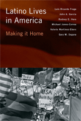

<body bgcolor="#FFFFFF" text="#000000" link="#0000FF" vlink="#CC0000" alink="#CC0000"><center><hr width="350" size="1" align="center" noshade>A nuanced and insightful assessment of Latino life in America<hr width="350" size="1" align="center" noshade><p><a href="https://cdcshoppingcart.uchicago.edu/Cart/ChicagoBook.aspx?ISBN=9781439900482&&PRESS=temple" target="_top">Buy this book!</a> | <a href="https://cdcshoppingcart.uchicago.edu/Cart/Cart.aspx?PRESS=temple" target="_top">View Cart</a> | <a href="https://cdcshoppingcart.uchicago.edu/Cart/Cart.aspx?PRESS=temple" target="_top">Check Out</a></p><p></p></center><!--none//--><h1>Latino Lives in America</h1>
<H2>Making It Home</H2>
<h3>Luis R. Fraga, John A. Garcia, Rodney E. Hero, Michael Jones-Correa, Valerie Martinez-Ebers and Gary Segura</h3>
<P>cloth 1-4399-0048-5 $80.50, Jan 10, <FONT COLOR=#990033>Available</FONT>
<br>paper 1-4399-0049-3 $28.95, Jan 10, <FONT COLOR=#990033>Available</FONT>
<br>Electronic Book 1-4399-0050-7 $28.95 <FONT COLOR=#990033>Available</FONT>
<BR> 224 pp
5.5x8.25
28&nbsp;tables 15&nbsp;halftones
</P><BLOCKQUOTE><I>"</i>Latino Lives in America<i> is a book we desperately needed. The authors explore almost all the issues affecting Latinos�education, discrimination, inter-group relations�and more (e.g., their discussion of intra-group relations among Latinos). Bravo to the authors for a job well done!."</I>
<br>&#151<b>Eduardo Bonilla-Silva</b>, Professor of Sociology, Duke University<I></I></BLOCKQUOTE>
<p>Latinos are the largest and fastest growing ethnic group in the United States, with increased levels of political mobilization and influence. In the timely and thoroughgoing <em>Latino Lives in America</em>, six prominent Latino scholars explore the profound implications of Latinos� population growth and geographic dispersion for American politics and society, tracking key changes and continuities in Latinos' attitudes, behavior, and social experiences.
</p><p>
Utilizing a unique set of &quot;narratives&quot; from focus group interviews, supplemented with quantitative findings from the 2006 Latino National Survey, the authors provide a snapshot of Latino life in America. The Latinos interviewed provide their thoughts regarding their sense of belonging and group identification, assimilation and transnationalism, housing, education, civic engagement, and perceptions of discrimination, as well as their experiences in new destinations, where they are trying to realize the �Americano� dream.
</p><p>
<em>Latino Lives in America</em> uses these conversations and the survey data to offer both a micro and macro look at how Latinos are transforming various aspects of American politics, culture, and life and how their experiences in the United States are changing them and their families.
</p>
<BR>&nbsp;<h2>Excerpt</h2><P>Excerpt available at <a href="http://www.temple.edu/tempress">www.temple.edu/tempress</a></p>
<BR>&nbsp;<h2>Reviews</h2>
<p><I>"Long awaited and beautifully written, </i>Latino Lives in America<i> glitters with luminous and faceted gems into the largest non-white group in the United States. In this slim, yet definitive volume, the stories of trial, tribulation, and triumph among the Latino National Survey focus group and survey participants pop-out of the pages in Kodachrome."</I>
<br>&#151<b>Taeku Lee</b>, Professor of Political Science and Law, University of California at Berkeley
<p><i>"This book is well written and provides a complementary analysis of both qualitative and quantitative data. Regarding the focus group data, the diversity of the participants is impressive.... Overall, this book would be a great read for anyone concerned with the state of Latino lives in the U.S. today. The voices of the participants express key concerns regarding the future of Latinos in America that need to be addressed not only for the well-being of Latinos, but for the well-being of the country as a whole." </i><br>&#151<b><i>Nexo</i></b>
<p><i>"Perhaps its best aspect is the authors' exploration of how and under what circumstances Latinos desire and are able to build a sense of pan-ethnic identity and ultimately political force in pursing the American Dream.... [O]ne of its strengths...is the impressive array of survey and focus group data....Summing Up: Recommended."</i><br>&#151<b><i>Choice</i></b>
<p><i>"Given Arizona's recent immigration law, one is drenched in a deja vu feeling as one reads this book. Because it explores how Latinos adjust to living in the United States, how they have struggled. To read it in the heat of the Arizona law makes it all the more poignant....Latino communities are far more 'politicized and mobilizable ' than generally believed. </i>Latino Lives in America<i>...explores how the heretofore slumbering giant of Latino voices has and will continue to produce changes in attitudes and social behaviors destined to influence the entire nation." </i><br>&#151<b><i>Hispanic Outlook on Higher Education</i></b>
<p><i>"[A] long-awaited and overdue contemporary account of Latino lives and their future trends in U.S. society.... </i>Latino Lives<i> follows a well-established scholarship that de-mystifies a wide-spread and ill-conceived imagery of Latino incorporation into mainstream America.... One of the most thought-provoking findings...is that these transnational ties create an ambivalent relationship between the United States and Latinos's countries of origin.... </i>Latino Lives<i> is a worthy read, which takes the discussion to a new dimension, dismissing old assumptions, and opening the door for the development of a new Latino paradigm shift focused on understanding the casual mechanisms that change, continuity, and the complexities within the Latino community would bring in terms of attitudinal and behavioral shifts in Latino political behavior."</i><br>&#151<b><i>Political Science Quarterly</i></b>
<p><i>"[A] timely overview of the contemporary state of economic, sociocultural, and political incorporation among 'Hispanic/Latinos' in the United States.... The main strength of this book lies in its impressive empirical data.... Overall, this book makes a serious contribution to the study of Latino life and political behavior in the United States."</i>
<br>&#151<b><i>Contemporary Sociology</i></b>
<p><i>"[The authors] make the most of their data, weaving a narrative that helps explain the dynamics of racial politics in the United States today.... One of the most compelling aspects of the book is its fearlessness in addressing head-on what scholars have considered a �paradox��the seemingly contradictory presence of Latinos' belief in individualism and simultaneous embrace of the collective nature of political action.... </i>Latino Lives in America<i> is a well-written book that exemplifies not only elegant prose but sophistication of thought, particularly in its treatment of the complexity of the dynamics of Latino politics, and in its discussion of change and continuity."</i><br>&#151<b><i>Public Opinion Quarterly</i></b>
<p><i>"</i>Latino Lives in America<i> is the first book to come out of the Latino National Survey (LNS) project. Its release has been much anticipated, and its authors do not shy away from covering the wide array of issues that are of perennial concern to those interested in Latino politics.... Fraga and his fellow authors...[offer] the reader a rare opportunity to hear participants� thoughts with clear meaning."</i><br>&#151<b><i>Perspectives on Politics</i></b>
<BR>&nbsp;<h2>Contents</h2><P>
<p>Acknowledgments
<br>Introduction: <i>A Time to Think Broadly</i>
<br>1. The Growing Presence of Latinos in the United States
<br>2. Trying for the Americano Dream:
Barriers to Making the United States �Home�
<br>3. Education: Latinos� Great Hope, America�s Harsh Reality
<br>4. Exploring Discrimination, Intergroup Relations, and Intragroup Relations among Latinos
<br>5. New Homes in New Communities:
Living in Rural America
<br>6. Transnationalism and the Language of Belonging
<br>7. The Evolving Latino Community and Pan-ethnicity: Explorations into the Confluence of Interactions, Networks, and Identity
<br>8. Conclusions: Paradoxes along the Way to Making America Home
<br>Notes
<br>References
<br>Index</p>
</P><BR>&nbsp;<H2>About the Author(s)</H2>
<P><b>Luis R. Fraga</b> is Associate Vice Provost for Faculty Advancement, Director of the Diversity Research Institute, and Russell F. Stark University Professor in the Department of Political Science at the University of Washington.</P>
<P><b>John A. Garcia</b> is Professor of Political Science at the University of Arizona.</P>
<P><b>Rodney E. Hero</b> is the Packey J. Dee Professor of American Democracy, in the Department of Political Science at the University of Notre Dame.</P>
<P><b>Michael Jones-Correa</b> is Professor of Government at Cornell University.</P>
<P><b>Valerie Martinez-Ebers</b> is Professor of Political Science at the University of North Texas.</P>
<P><b>Gary Segura</b> is Professor of Political Science at Stanford University, and Director of Chicano Studies in the Center for Comparative Studies of Race and Ethnicity.</P>
<BR><H2>Subject Categories</H2>
<p><A HREF="/tempress/latino.html" TARGET="_top">Latino/a Studies</a>
<BR><A HREF="/tempress/sociology.html" TARGET="_top">Sociology</a>
<BR><A HREF="/tempress/race.html" TARGET="_top">Race and Ethnicity</a>
</p>
<p align="center"><a href="https://cdcshoppingcart.uchicago.edu/Cart/ChicagoBook.aspx?ISBN=9781439900482&&PRESS=temple" target="_top">Buy this book!</a> | <a href="https://cdcshoppingcart.uchicago.edu/Cart/Cart.aspx?PRESS=temple" target="_top">View Cart</a> | <a href="https://cdcshoppingcart.uchicago.edu/Cart/Cart.aspx?PRESS=temple" target="_top">Check Out</a></p><p><font face="Arial" size="1"><a href="copyright.html" onMouseOver="window.status='Web Copyright Policy';return true;" onMouseOut="window.status=''" title="Web Copyright Policy">&copy;</a> 2015 <a href="http://www.temple.edu" target="new" onMouseOver="window.status='Link to Temple University home page';return true;" onMouseOut="window.status=''" title="Link to Temple University home page">Temple University</a>. All Rights Reserved. http://www.temple.edu/tempress/titles/2042_reg.html</font></p>